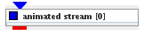
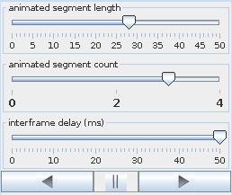
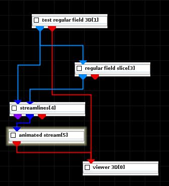
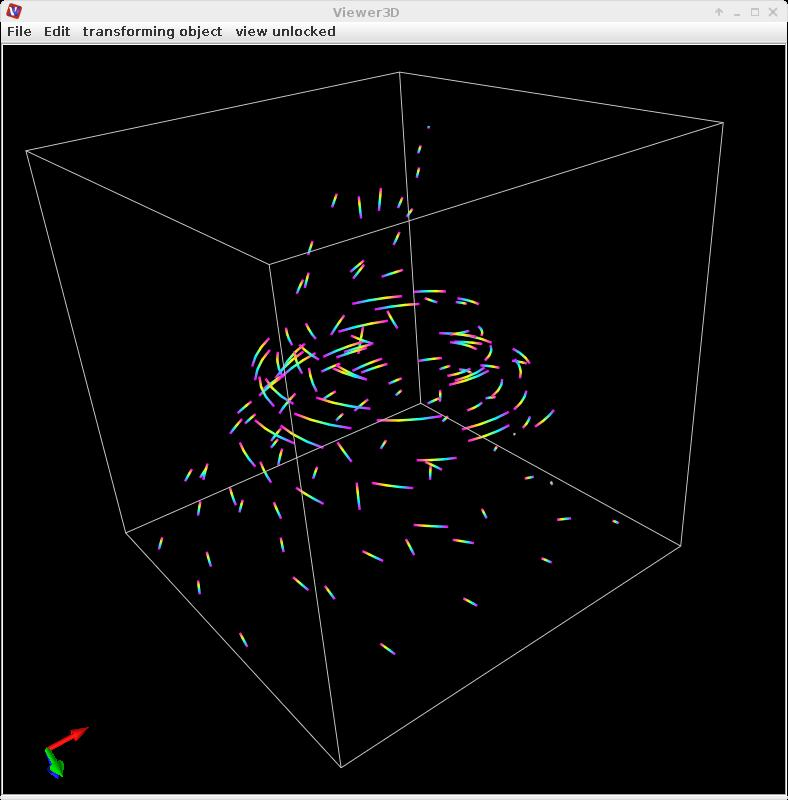

|
|
|

| input port | type | description | data acceptors |
|---|---|---|---|
| inField | VNField | ||
| output port | type | description | data schemas |
| outObj | VNGeometryObject | Output of geometry object for 3D streamlines |
Animated Stream
The module animates colored short line segments along streamlines. The length of the segments is proportional to the absolute value of velocity.
Input data
The input field is a flow or a streamlines field.
Output data
Output is a geometry object for 3D streamline segments.
Computation parameters

The animated segment length slider defines the length of the segments on a streamline.
The animated segment count slider defines the number of segments on a streamline.
The interframe delay slider describes the time delay between consecutive frames.
A set of buttons allows to run the animation:
Presentation parameters
Presentation tab contents are described in the common interfaces section unter the Presentation Panel entry.
Example

Choose test regular field 3D module from test objects library, regular field slice, streamlines and animated stream modules from 3D field mappers library and connect them.
In regular field slice computation UI choose axis k and slice 50. In streamlines computation UI choose vector component vortex and downsize (11,11,11). In animated stream computation UI choose animated segment length 3 and animated segment count 6. Start animation.
